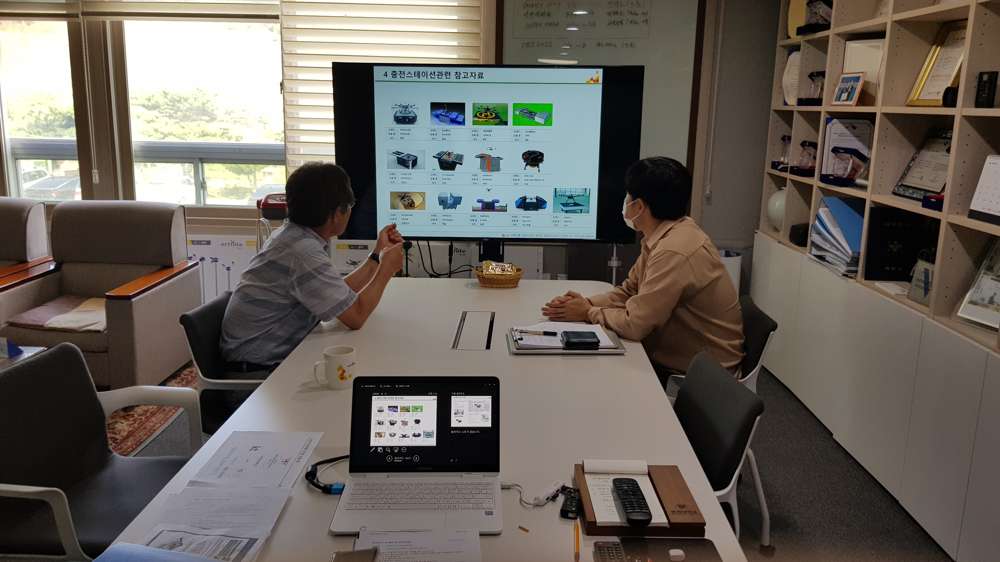

POSTECH ICT V+ 4.0 매칭 기업 ISON 2021-07-23 Internship 관련 미팅
ISON 개발 관련 목차
- 2021-03-02 ISON Meeting
- 2021-03-24 ISON Meeting
- 2021-04-07 ISON Development: Error-State Kalman Filter_1
- 2021-04-07 ISON Development: Error-State Kalman Filter_2
- 2021-04-26 ISON Development: Drone System Implementation
- 2021-05-10 ISON Development: Drone Control (1)
- 2021-06-10 ISON Development: Drone Control (2)
- 2021-07-23 ISON Internship
혁신인재 4.0 하계 인턴쉽 관련한 미팅을 이스온 본사에서 진행하였다.
인턴쉽 테스크 관련하여 ISON 김응욱 대표님께서 처음으로 제시해주신 주제는 다음과 같았다.
- 소형드론 스테이션 종류와 충전기술 현황 (세계 스테이션 개발동향, 업체, 충전 방법, 용량, 시간, 하중 등..)
- 드론 배터리 고속 충전기술 및 배터리 성능저하 방지기술
- 드론운행에서 소요전력 분석연구 (이륙직전동작, 수직이착륙, 주행 등 …)
이와 관련하여 2번 사항은 본인의 연구 분야와 맞지 않으며 전문적인 분야이기 때문에 진행하기 어렵다고 판단했기 때문에 해당 사항에 대해서 대표님과 의논하고 나머지 주제 관련하여 브리핑을 듣기위해 대표님과 7/22(목) 14시 30분에 이스온 본사에서 미팅을 진행하였다.
미팅은 이스온이 1번 주제 관련하여 기조사한 내용에 대해서 설명을 듣고, 3번 주제 관련하여 본인이 알고있는 내용에 대해서 설명드리는 방식으로 진행되었다. 3번 주제 관련하여 비행체는 지면 근처에서 비행 시에 ground effect라 불리는 효과로 인해 비행 효율이 올라가며, propeller 및 wing의 직경의 수배 이상의 높이로 비행할 경우 에너지 효율 차이는 없음을 설명드렸다. 3번 주제와 관련하여 이 정도만 진행할 생각이었는데, 대표님께서 비행 phase에 관한 에너지 분석 뿐만아니라 기상 상황에 따른 일반적인 에너지 소모와 관련된 내용에 대해서도 조사해줄 수 있는지 요청하셨고 이에 대해 조사를 진행하면서 1번 주제를 병행하기는 쉽지 않다고 판단, 3번 주제에 대해서만 심도있게 진행하는 것으로 결론지었다.
정리하자면, 8/7(토)까지 약 2주기간 동안 ‘드론 운행에서 소요 전력 분석 리서치’라는 주제에 대해서 조사하고 보고서를 작성하는 형태로 인턴쉽을 진행하기로 결정하였다.
